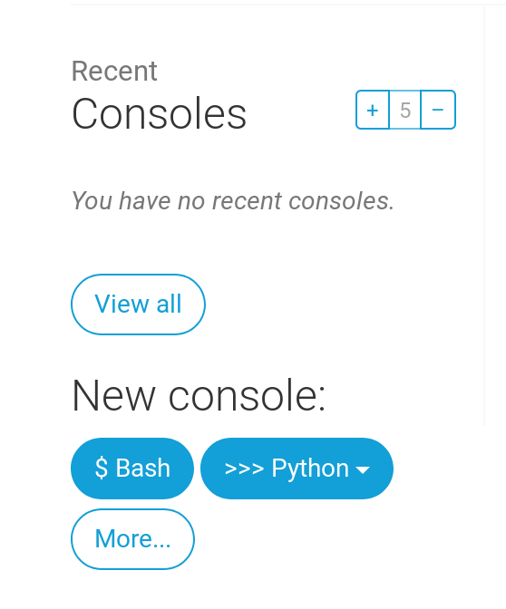

Deploy!
Observação: Pode ser um pouco difícil chegar ao final desse capítulo. Persista e termine-o; o deploy é uma parte importante do processo de desenvolvimento de um website. Colocar o seu site no ar é um pouco mais complicado, então esse capítulo está no meio do tutorial para que sua monitora possa lhe ajudar nessa tarefa. Isto significa que você pode terminar o tutorial por conta própria se o tempo acabar.
Até agora, seu site só estava disponível no seu computador. Agora você aprenderá como implantá-lo (fazer o 'deploy')! O deploy é o processo de publicação da sua aplicação na Internet de forma que as pessoas possam, finalmente, vê-la. :)
Como você aprendeu, um website precisa estar em um servidor. Existem vários provedores de servidores na internet, nós vamos usar o PythonAnywhere. O PythonAnywhere é gratuito para pequenas aplicações que não recebem muitos visitantes, então vai ser suficiente para você por enquanto.
O outro serviço externo que usaremos é GitHub, que é um serviço de hospedagem de código. Existem outros, mas atualmente quase todos os programadores possuem uma conta no GitHub e agora, você também terá a sua!
Estes três lugares serão importantes para você. Seu computador local é o lugar onde você fará o desenvolvimento e testes. Quando estiver satisfeita com as mudanças, você colocará uma cópia de seu programa no GitHub. Seu site estará na PythonAnywhere e você irá atualizá-lo ao subir uma nova cópia do seu código para o GitHub.
Git
Observação: Se você já fez os passos de instalação, não precisa fazer novamente - você pode pular para a próxima seção e comece a criar seu repositório Git.
O Git é um "sistema de controle de versão" usado por muitos programadores. Este software pode acompanhar mudanças em arquivos ao longo do tempo para que você possa recuperar versões específicas mais tarde. Um pouco parecido com o recurso "controlar alterações" do Microsoft Word, mas muito mais poderoso.
Instalando o Git
Você pode baixar o Git em git-scm.com. Clique em "next" em todos os passos, exceto em um: no passo intitulado "Ajustando o PATH do seu ambiente" (em inglês "Adjusting your PATH environment"), escolha "Use Git e ferramentas Unix opcionais do Prompt de Comando do Windows" (em inglês "Use Git and optional Unix tools from the Windows Command Prompt"), que é a opção mais abaixo. Fora isso, as configurações padrão estão ótimas. "Checkout Windows-style, commit Unix-style line endings" está bom.
Não se esqueça de reiniciar o prompt de comando ou o powershell depois que a instalação terminar com sucesso.
Baixe o Git em git-scm.com e siga as instruções.
Observação: Se estiver rodando o OS X 10.6, 10.7, ou 10.8, você precisará instalar essa versão do git: Instalado Git para o OS X Snow Leopard
Começando o seu repositório no Git
O Git controla as alterações em um determinado conjunto de arquivos no que chamamos de repositório de código (ou "repo"). Vamos criar um para o nosso projeto. Abra o seu console e execute esses comandos no diretório djangogirls:
Observação: Verifique o seu diretório atual com um
pwd(OSX/Linux) ou o comandocd(Windows) antes de inicializar o repositório. Você deve estar na pastadjangogirls.
command-line
$ git init
Initialized empty Git repository in ~/djangogirls/.git/
$ git config --global user.name "Seu Nome"
$ git config --global user.email voce@exemplo.com
Só é necessário iniciar o repositório Git uma vez por projeto (e você não vai precisar preencher seu nome de usuário e e-mail nunca mais).
O Git irá controlar as alterações em todos os arquivos e pastas neste diretório, mas existem alguns arquivos que queremos que ele ignore. Fazemos isso através da criação de um arquivo chamado .gitignore no diretório base. Abra seu editor e crie um novo arquivo com o seguinte conteúdo:
.gitignore
*.pyc
*~
__pycache__
myvenv
db.sqlite3
/static
.DS_Store
E salve-o como .gitignore na pasta "djangogirls".
Observação: O ponto no início do nome do arquivo é importante! Se você estiver tendo alguma dificuldade em criá-lo (Macs, por exemplo, não gostam quando você tenta criar arquivos que começam com um ponto por meio do Finder), use a função "Salvar Como..." no seu editor; não tem como errar.
Observação: Um dos arquivos especificados no seu
.gitignoreé odb.sqlite3. Este arquivo é o seu banco de dados local, onde todos os seus posts ficarão guardados. Não queremos que você adicione este arquivo ao repositório porque o seu site no PythonAnywhere vai utilizar um banco de dados diferente. Esse banco poderia ser SQLite, como na sua máquina de desenvolvimento, mas normalmente você utilizará um chamado MySQL, que consegue lidar com bem mais visitantes ao site do que o SQLite. De qualquer forma, ao ignorar o banco de dados SQLite para a cópia do GitHub, todos os posts que você criou até agora vão estar disponíveis somente no seu ambiente local, e você terá que adicioná-los novamente durante a produção. Pense no seu banco de dados local como um bom parque de diversões onde você pode testar coisas diferentes e não ter medo de apagar os posts reais do seu blog.
É uma boa idéia usar um comando git status antes de git add ou sempre que você não tiver certeza do que mudou. Isso evitará quaisquer surpresas, como os arquivos errados serem adicionados ou "commitados". O comando git status mostra informações sobre arquivos que não estão sendo controlados, arquivos que foram modificados ou preparados (staged), o status do branch, e muito mais. A saída do comando deve ser parecida com o seguinte:
linha de comando
$ git status
On branch master
Initial commit
Untracked files:
(use "git add <file>..." to include in what will be committed)
.gitignore
blog/
manage.py
mysite/
requirements.txt
nothing added to commit but untracked files present (use "git add" to track)
E finalmente salvamos nossas alterações. Vá para o seu console e execute estes comandos:
linha de comando
$ git add --all .
$ git commit -m "My Django Girls app, first commit"
[...]
13 files changed, 200 insertions(+)
create mode 100644 .gitignore
[...]
create mode 100644 mysite/wsgi.py
Subindo o seu código para o GitHub
Vá para GitHub.com e crie uma conta nova, gratuita. (Se você já fez isso em preparação para o workshop, ótimo!)
Em seguida, crie um novo repositório chamado "my-first-blog". Deixe a caixa "Initialize with a README" desmarcada, deixe a opção do .gitignore em branco (nós já fizemos isso manualmente) e deixe a licença como "None".

Observação: O nome
my-first-blogé importante - você poderia escolher qualquer outra coisa, mas ele vai aparecer várias vezes nas instruções abaixo, e você teria que substituir todas as vezes. É mais fácil simplesmente manter o nomemy-first-blog.
Na próxima tela, você verá a URL pra clonar o seu repo. Escolha a versão "HTTPS", e copie-a e cole no terminal em seguida:

Agora precisamos conectar o repositório Git no seu computador com o que existe no GitHub.
Digite o seguinte no seu terminal (Substitua <your-github-username> pelo nome de usuário que você colocou quando criou a sua conta no GitHub, sem os sinais de menor e maior):
linha de comando
$ git remote add origin https://github.com/<your-github-username>/my-first-blog.git
$ git push -u origin master
Digite o seu nome e senha do GitHub e você deverá ver algo parecido com isso:
linha de comando
Username for 'https://github.com': ola
Password for 'https://ola@github.com':
Counting objects: 6, done.
Writing objects: 100% (6/6), 200 bytes | 0 bytes/s, done.
Total 3 (delta 0), reused 0 (delta 0)
To https://github.com/ola/my-first-blog.git
* [new branch] master -> master
Branch master set up to track remote branch master from origin.
O seu código agora está no GitHub. Vai lá ver! Você perceberá que ele esta em ótima companhia - o Django, o Tutorial Django Girls e vários outros incríveis projetos open source também hospedam seu código no GitHub. :)
Configurando o seu blog no PythonAnywhere
Crie uma conta no PythonAnywhere
Observação: Você talvez já tenha criado uma conta no PythonAnywhere durante os passos de instalação. Nesse caso, não precisa criar outra.
Cadastre uma conta gratuita de "Beginner" (Iniciante) no PythonAnywhere:
Observação: Quando escolher seu nome de usuário, lembre-se de que a URL do seu blog vai ter o formato
nomedeusuario.pythonanywhere.com, então escolha seu próprio apelido ou um nome que represente o tema do seu blog.
Criando um token de API do PythonAnywhere
Você só precisa fazer isso uma vez. Quando estiver inscrita no PythonAnywhere, você será levada ao seu dashboard. Encontre o link no lado direito superior da página "Accounts", e então selecione a aba "API token" e clique no botão que diz "Create new API token".

Configurando o seu site no PythonAnywhere
Navegue para a Dashboard do PythonAnywhere clicando no logo e escolha a opção de iniciar um console "Bash" -- essa é a versão do PythonAnywhere da linha de comando, igual à que existe no seu computador.

Observação: O PythonAnywhere é baseado em Linux, então se você estiver no Windows, o console terá uma cara um pouco diferente do que aparece no seu computador.
Fazer o deploy de uma aplicação web no PythonAnywhere envolve baixar o seu código do GitHub e configurar o PythonAnywhere para reconhecê-lo e começar a servi-lo como uma aplicacão web. Existem formas manuais de fazer isso, mas o PythonAnywhere fornece uma ferramenta que vai fazer tudo pra você. Vamos instalar ela primeiro:
linha de comando do PythonAnywhere
$ pip3.6 install --user pythonanywhere
Isso deve mostrar na tela coisas como Collecting pythonanywhere, e depois de algum tempo finalizar com uma linha dizendo Successfully installed (...) pythonanywhere (...).
Agora vamos executar a ferramenta para configurar a nossa aplicação a partir do GitHub automaticamente. Digite os seguintes comandos no console do PythonAnywhere (não se esqueça de usar o seu nome de usuário no GitHub ao invés de <your-github-username>):
linha de comando do PythonAnywhere
$ pa_autoconfigure_django.py https://github.com/<your-github-username>/my-first-blog.git
Enquanto assiste a execução da ferramenta, você pode ver o que ela está fazendo:
- Baixando o seu código do GitHub;
- Criando um virtualenv no PythonAnywhere, igual ao que existe no seu computador;
- Atualizando o seu arquivo de configuração com algumas configurações sobre o deploy;
- Criando um banco de dados no PythonAnywhere usando o comando
manage.py migrate; - Criando os seus arquivos estáticos (nós aprenderemos sobre eles mais tarde)
- E configurando o PythonAnywhere para servir a sua web app através da sua API.
No PythonAnywhere, todos esses passos são automatizados, mas são os mesmos que você executaria ao utilizar qualquer outro provedor. O importante agora é reparar que o seu banco de dados no PythonAnywhere é na verdade completamente separado do banco de dados no seu computador — isso significa que eles têm posts e contas de admin completamente diferentes.
Por causa disso, da mesma forma que tivemos que fazer no nosso computador, precisamos criar a conta de admin com createsuperuser. O PythonAnywhere já ativou o seu virtualenv automaticamente, então tudo o que você precisa fazer é executar o comando:
linha de comando do PythonAnywhere
(ola.pythonanywhere.com) $ python manage.py createsuperuser
Digite as informações sobre a sua conta de admin. É mais fácil usar as mesmos que usou no seu computador pra evitar qualquer confusão, a menos que você queira criar uma senha mais segura para a conta no PythonAnywhere.
Agora, se quiser, você pode dar uma olhada no seu código no PythonAnywhere usando ls:
linha de comando do PythonAnywhere
(ola.pythonanywhere.com) $ ls
blog db.sqlite3 manage.py mysite requirements.txt static
(ola.pythonanywhere.com) $ ls blog/
__init__.py __pycache__ admin.py forms.py migrations models.py static
templates tests.py urls.py views.py
Você também pode visitar a aba "Files" e dar uma olhada usando o gerenciador de arquivos do PythonAnywhere.
Estamos no ar!
Agora o seu site deve estar no ar, na internet! Clique na aba "Web" do PythonAnywhere para pegar o link dele. Você pode compartilhar esse link com quem quiser :)
Observação: Este é um tutorial para iniciantes e ao fazer o deploy do site desta forma, nós tomamos alguns atalhos que não são ideais do ponto de vista de segurança. Se e quando você decidir continuar trabalhando nesse projeto ou começar um novo, você deve revisar a checklist de implantação do Django para pegar algumas dicas de como tornar seu site seguro.
Dicas de debugging
Se você vir um erro ao rodar o script pa_autoconfigure_django.py, aqui vão algumas causas comuns:
- Esquecer de criar um token de API do PythonAnywhere.
- Digitar a URL do seu GitHub incorretamente.
- Se você vir um erro dizendo "Could not find your settings.py" (settings.py não encontrado), você provavelmente não adicionou todos os seus arquivos ao Git e/ou você não fez o push deles para o GitHub. Dê uma revisada na sessão sobre Git acima
Se você vir um erro ao visitar o seu site, o primeiro lugar para procurar informações sobre ele é o log de erros. Você vai encontrar um link para o log na aba Web do PythonAnywhere. Verifique se há alguma mensagem de erro no log; as mais recentes estarão no final.
Há também algumas dicas de debugging no site de ajuda da PythonAnywhere.
E lembre-se, a sua monitora está aí pra ajudar!
Visite o seu site!
A página padrão no seu site deverá dizer "It worked!" ("Funcionou!"), igual ao seu ambiente local. Adicione /admin ao final da URL e você será levada ao site de administração. Faça login com o nome de usuário e a senha e você poderá adicionar novos Posts ao servidor.
Depois de criar alguns posts, você pode voltar para o seu ambiente local (não o PythonAnywhere). Daqui pra frente você deve trabalhar no seu ambiente local para fazer alterações. Este workflow é comum no desenvolvimento web – fazer alteracões locais, subir essas alteracões pro GitHub, e baixar essas alterações para o seu servidor web de produção. Isto permite que você desenvolva e experimente sem quebrar o seu site que está no ar. Bem legal, né?
Você merece MUITOS parabéns! Deploys em servidores são uma das partes mais complicadas do desenvolvimento web e não é incomum levar vários dias até conseguir fazer com que isso funcione. Mas seu site está no ar, na internet de verdade! Simples assim!